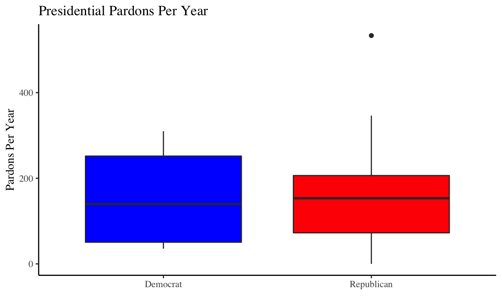

Today we will be looking at how to compare quantitative measurements for two populations! This procedure is called a two-sample t-test and will determine whether there is a notable difference between the mean of two populations. While walking through how to do this, we will be using presidential pardon data in a dataset containing the name of each president, the year the presidency began, the number of years in office, the political party, and the number of pardons granted during their presidency. We will also construct a variable that calculates the number of pardons per year in office, to account for varying term lengths.
Here is a quick look at the data and the code for a few of the transformations we made:
#Load in the dataset
presidential_pardons = read_csv("presidentialpardons.csv")
#Remove independents:
presidential_pardons_dem_rep <-subset(presidential_pardons, party!= "Independent")
#Convert party to categorical variable
presidential_pardons$party <- as.factor(presidential_pardons$party)
#Create new variable with pardons per year
presidential_pardons_dem_rep = presidential_pardons_dem_rep %>%
mutate(pardons_per_year = pardons/years_in_presidency)
#Summary of first few observations
head(presidential_pardons_dem_rep)
# A tibble: 6 x 7
name year_presidency… pardons years_in_presid… party og_party
<chr> <dbl> <dbl> <dbl> <chr> <chr>
1 Andr… 1829 386 8 Demo… Democrat
2 Mart… 1837 168 4 Demo… Democrat
3 Jame… 1845 268 4 Demo… Democrat
4 Fran… 1853 142 4 Demo… Democrat
5 Jame… 1857 150 4 Demo… Democrat
6 Abra… 1861 343 4 Repu… Republi…
# … with 1 more variable: pardons_per_year <dbl>In order to understand how two-sample t-tests fit into the larger framework of hypothesis testing you have learned, we can use the following framework. First, consider whether the variable of interest is categorical (a proportion) or quantitative (a mean). If the variable is categorical, you will be running a z-test and if it is quantitative you will be running a t-test. Next, consider the number of populations of interest. If you are using a single population the test of interest will be a one-proportion z-test or a one-sample t-test. Similarly, with two populations you run a two-proportion z-test or two-sample t-test.
In the dataset we will focus on, we have two populations: Republican presidents and Democratic presidents. The mean that we will be looking at for each is the mean number of presidential pardons granted during their presidencies, scaled by the number of years in office. Thus, our data fit the framework for a two-sample t-test.
Because the data is not paired, and we are not comparing a single data point in both populations, we will skip paired t-tests for now and will dive into the two-sample t-test. In our case, the sample we are working with is the whole population since we have data for every US President. But, for this example, let’s assume there are actually hundreds of Democratic and Republican presidents and our dataset is just a random sample of those hundreds. By looking at the sample and comparing the means with our two-sample t-test, we can determine whether there is a significant difference in the means for these entire populations, using the data in our sample.
Our null hypothesis, as we’ve seen before, assumes that there is no difference between the two groups. So, since we are comparing the means of two populations, \(H_o: \mu_1 - \mu_2 = 0\). Our alternative hypothesis is that there is a notable difference between the means, and is \(H_a: \mu_1 - \mu_2 \neq 0\).
For the purpose of clarity, we will refer to the mean number of pardons by Republican presidents as \(\mu_R\) and the mean number of pardons by Democratic candidates as \(\mu_D\). Thus our null hypothesis becomes \(H_o: \mu_R - \mu_D = 0\). Similarly, the alternative hypothesis becomes \(H_a: \mu_R - \mu_D \neq 0\).
Let’s explore our data a little more in the following graphics. The first is interactive, and you can move your mouse over each point to see who the president is. The second is an animation, so that you can see changes over time. The third graph is a boxplot displaying the same data, so that the distribution for each party is visible.
Plotly Graph


In order to run our two-sample t-test, we need the sample mean, \(\bar{x}\), the number of observations, n, and the standard deviation, s, for each sample. In order to find the number of observations for each party, we can use the tally() function from the dplyr library.
#Find sample sizes for each party
library(dplyr)
presidential_pardons %>%
group_by(party) %>%
tally()
# A tibble: 3 x 2
party n
<fct> <int>
1 Democrat 14
2 Independent 11
3 Republican 19From this, we can see that there are 14 past Democratic presidents, 19 Republican presidents, and 11 presidents from any other party. For the purpose of our analysis, we will only focus on the Democratic and Republican presidents. Thus \(n_D = 14\) and \(n_R = 19\). To find the sample means and standard deviations we can use R’s summarise function:
#Find sample means and standard deviation by party
presidential_pardons_dem_rep %>%
group_by(party) %>%
summarise(mean = mean(pardons_per_year), sd = sd(pardons_per_year))
# A tibble: 2 x 3
party mean sd
<chr> <dbl> <dbl>
1 Democrat 155. 109.
2 Republican 159. 126.From running the above command, we now have that \(\bar{x}_R = 158.67\) and \(\bar{x}_D = 154.75\) and \(s_R = 126.24\) and \(s_D = 108.86\).
In order to do a two-sample t-test, a few assumptions must be met. Just as in a one-sample t-test, the same three conditions must be met: independence assumptions within groups, the nearly normal condition, and the randomization condition. In addition, the data must fulfill the independent group assumption, as the two groups (Democrats and Republicans), must be independent of each other.

It’s always important to check if your data looks nearly normal in a histogram. In our case, the distributions don’t necessarily look normal, but for the purpose of this project we will assume that the nearly normal condition is met. Ideally, we would have a larger sample size in order to meet the Central Limit Theorem for normal bell-shaped data. But, since we were limited by the number of presidents the country has had, we will assume that the condition is met and proceed with our test.
For the purposes of our t-test, we will assume the number of pardons one Democratic or Republican president granted did not affect the number of pardons other presidents of their party granted, in order to meet the independence within groups condition.
For the randomization condition, we would hope that each observation is taken by random sample from the population. Again, in this case, we have data from every member of the population since we have every president, but we have previously assumed for the purpose of this project that this is a random sample.
Now, we can run our two-sample t-test!
#2 sample t-test for pardons per year
result_pardons_per_year <- t.test(pardons_per_year ~ party, data = presidential_pardons_dem_rep,
var.equal = TRUE)
result_pardons_per_year
Two Sample t-test
data: pardons_per_year by party
t = -0.093446, df = 31, p-value = 0.9262
alternative hypothesis: true difference in means is not equal to 0
95 percent confidence interval:
-89.59820 81.74751
sample estimates:
mean in group Democrat mean in group Republican
154.7470 158.6724 Viewing the output of the two-sample t-test, like with any of the tests we have looked at previously, the p-value tells us whether to accept or reject the null hypothesis. We will use an alpha-level of 0.05 as the deciding limit. Our p-value of .9262 means that there is a 92.62% chance that we would get results similar to what we have, with the true value of the means not being significantly different. Since our p-value is definitely not under 0.05, we do not reject the null hypothesis. Thus, there is insufficient evidence to prove that the mean pardons per year for the two parties is substantially different.
Hopefully, this walk through of performing a two-sample t-test with real data was helpful for you, and you are able to see why hypothesis testing can be so useful in the real world!